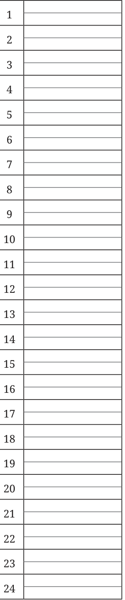
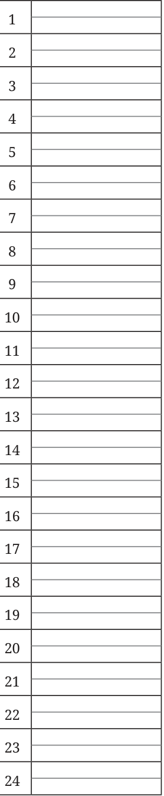
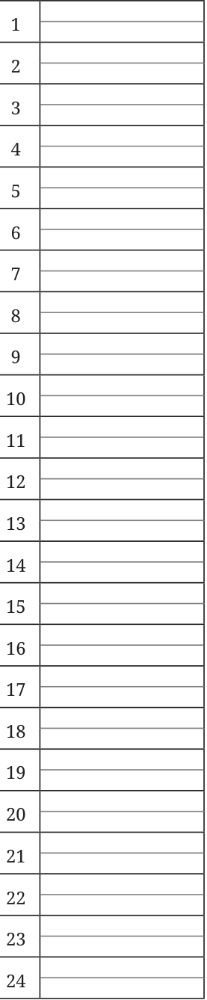

Library
·
Class 8 Mathematics · Part 2
Appendix · Learning Material Sheets
←
☰
Appendix
Front Matter
Learning Material Sheets
→
◐
Appendix · Appendix
Learning Material Sheets
4 figures



Isometric Grid
← Previous
Front Matter
Appendix